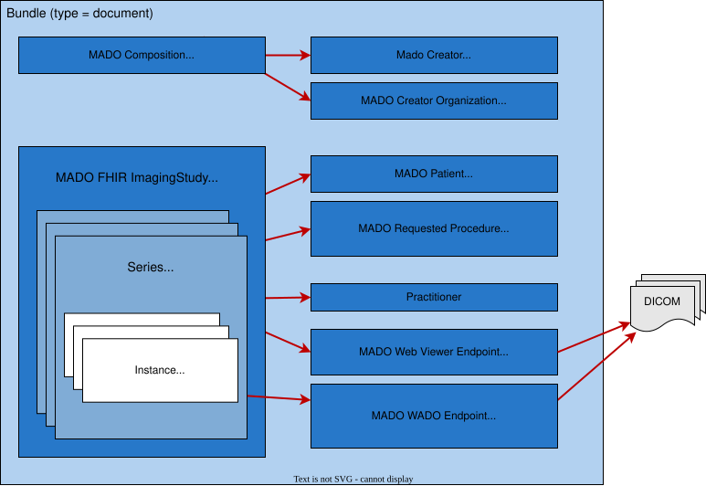

Manifest-based Access to DICOM Objects (MADO)
1.0.0 - trial-use

Manifest-based Access to DICOM Objects (MADO)
1.0.0 - trial-use

This page is part of the Manifest-based Access to DICOM Objects (MADO) (v1.0.0: Publication) based on FHIR (HL7® FHIR® Standard) R4. This is the current published version. For a full list of available versions, see the Directory of published versions
The FHIR Imaging Study Manifest represents a summary of the data stored in a DICOM imaging study. It contains the information stored in a PACS expressed in FHIR. This page defines the FHIR encoding of such manifest. It is the 'document' that is searched for and provides the URLs that allow download of the imaging content.
This section specifies the structure and format of an Imaging Study Manifest for the MADO Profile using the FHIR standard. It is based on the DICOM Key Object Selection (KOS) Document Information Object Definition (IOD) as specified in DICOM PS3.3 Section A.35.4 Key Object Selection Document IOD.
The FHIR Imaging Study Manifest is a FHIR document Bundle. The figure below presents an overview of the Bundle and the imaging manifest data that is included in it. In order to keep the diagram readable, not all references are included.

The FHIR Imaging Study Manifest is a FHIR bundle of type 'document' that SHALL conform to the MADO FHIR Imaging Study Manifest Bundle profile. This Bundle includes the MADO Composition resource, the MADO Imaging Study resource, the MADO Patient, MADO Creator and MADO Creator Organization, the MADO Requested Procedure, and the endpoints Endpoint: MADO WADO endpoint and Endpoint: MADO profile for Web Viewer endpoints.
The profiles for the MADO FHIR Imaging Study Manifest Bundle and the resources it contains have fields marked as Must Support (MS) (marked with an S in the Flags column), which SHALL be populated if the value is known.
The MADO Composition is required in order to make it a FHIR document Bundle and can be used to present a rendering of the content of the manifest.
The MADO Imaging Study is the heart of the manifest and provides most of the information related to the imaging study including the modality, UIDs, series and instances.
The MADO Patient resource holds the patient information.
The MADO Creator and MADO Creator Organization resources provide information on the device and organization that created the manifest.
The MADO Requested Procedure provides information on the order for the imaging study, including the order specific identifiers: Accession Number, Placer Number and Filler number.
Endpoint resources contain the information that allows the client to access the DICOM data. The current model identifies different Endpoints:
address defined in the endpoint opens a web viewer on the study.address field holds the WADO base URL that allows access to the series information (see IHE RAD TF-2: 4.107 WADO-RS Retrieve [RAD-107]).The following links are provided for convenience, they list the different profiles defined in this IG as well as their descriptions. Please note this copies the description text from the profile, please interpret any normative language in these descriptions within the scope of the profile.
| Title | Description |
| MADO Accession Number Identifier | Profile for the Accession Number Identifier used in the MADO context. This profile is used for the Identifier that represents the Accession Number in the MADO context. It includes additional constraints and extensions specific to the MADO context, such as the value set for the type of identifier and the fixed value for the system of the identifier. |
| Extension: Anatomical Region | The anatomical region in an ImagingStudy instance. This is additional information next to ImagingStudy.series.bodySite. |
| MADO Composition | A FHIR Composition profile for MADO manifests is needed as FHIR Bundles of type |
| MADO Creator | A profile for the Device resource that represents the creator of an FHIR Imaging Study Manifest. The primary goal is to communicate the fields:
|
| MADO Creator Organization | Profile on Organization that specifies the required elements for the organization that creates MADO manifests. |
| Extension: DocumentReference.bodySite | Carries the R5 DocumentReference.bodySite.concept (CodeableReference) for use in R4.
Imported locally because hl7.fhir.uv.xver-r5.r4#0.1.0 does not include an extension
for it. Only the |
| Extension: DocumentReference.modality (R5 cross-version) | Carries the R5 DocumentReference.modality element for use in R4. Imported locally because hl7.fhir.uv.xver-r5.r4#0.1.0 does not publish a DocumentReference.modality cross-version extension. |
| MADO FHIR Imaging Study Manifest Bundle | Profile for FHIR Bundles used as an FHIR Imaging Study Manifest in the MADO context. It includes constraints and extensions specific to FHIR Imaging Study Manifest, such as the type of study, the clinical specialty, and the anatomical region of interest. |
| MADO Imaging Study | Profile for ImagingStudy resources that represent the imaging studies manifest in the MADO context. It includes additional constraints and extensions specific to the MADO context, such as the study modality, the clinical specialty, the anatomical region of interest, the presence of significant images. |
| Extension: MADO Document Title of Key Object Selection documents | The document title code of the Key Object Selection document TID 2010 this instance refers to. |
| Extension: Number of Frames | The number of frames in an ImagingStudy instance. |
| MADO Patient | Profile on Patient that specifies the required elements for the patient that is the subject of the manifest. |
| MADO Referenced Accession Number Identifier | Profile for the Reference that contains the Accession Number Identifier used in the MADO context. This profile is used for the Reference that contains the Identifier that represents the Accession Number in the MADO context. It includes additional constraints and extensions specific to the MADO context, such as the value set for the type of identifier and the fixed value for the system of the identifier. |
| MADO Referenced Study Instance UID Identifier | Profile for the Reference that contains the Study Instance UID Identifier used in the MADO context. This profile is used for the Reference that contains the Identifier that represents the Study Instance UID in the MADO context. It includes additional constraints and extensions specific to the MADO context, such as the value set for the type of identifier and the fixed value for the system of the identifier. |
| MADO Requested Procedure | A profile for the ServiceRequest resource that represents the Requested Procedure (see 6.X.2.8.1 Referenced Request Macro Description). |
| Extension: Retrieve Location UID | The location UID of the source of the WADO URL. See XC-WADO and Part03 table_A.35.4-1. |
| MADO Study Instance UID Identifier | Profile for the Study Instance UID Identifier used in the MADO context. This profile is used for the Identifier that represents the Study Instance UID in the MADO context. It includes additional constraints and extensions specific to the MADO context, such as the value set for the type of identifier and the fixed value for the system of the identifier. |
| Endpoint: MADO WADO endpoint | This profile defines a WADO endpoint for accessing imaging study content. MADO WADO Endpoint holds an example of a endpoint with a
|
| Endpoint: MADO profile for Web Viewer endpoints | This profile defines the Web Viewer endpoint for accessing imaging study content. The URL in the Endpoint SHALL be a fully populated URL that contains all the information required to the launch the viewer to this study. |
The sections below show the various MADO data elements that are generated based on a DICOM study.
The Binary resource contains the DICOM KOS Manifest for the study. The Bundle resource contains the FHIR Imaging Study Manifest. The DocumentReference instances provide MHD DocumentReference instances that point to these manifests.
Based on the DICOM study A, (Study_A.zip), the following resources are created:
| Type | Id |
Binary | dicom-kos-mado--2047166865 |
Bundle | mado-bundle--2047166865 |
DocumentReference | mado-documentreference-fhir--2047166865 |
DocumentReference | mado-documentreference-kos--2047166865 |
Based on the DICOM study B, (Study_B.zip), the following resources are created:
| Type | Id |
Binary | dicom-kos-mado--2047166866 |
Bundle | mado-bundle--2047166866 |
DocumentReference | mado-documentreference-fhir--2047166866 |
DocumentReference | mado-documentreference-kos--2047166866 |
IG © 2025+ IHE Radiology Technical Committee. Package ihe.rad.mado#1.0.0 based on FHIR 4.0.1. Generated 2026-09-03
Links: Table of Contents |
QA Report
| New Issue | Issues
Version History |
 |
Propose a change
|
Propose a change